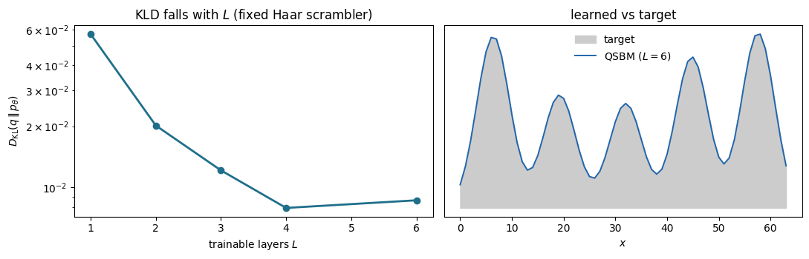

Code
import numpy as np
import jax, jax.numpy as jnp
import matplotlib.pyplot as plt
jax.config.update("jax_enable_x64", True)A Born machine stores a probability distribution in the amplitudes of a quantum state: measuring a parametrized state \(|\psi(\boldsymbol\theta)\rangle\) in the computational basis returns outcome \(x\) with probability \(p_{\boldsymbol\theta}(x)=|\langle x|\psi(\boldsymbol\theta)\rangle|^2\). Training adjusts \(\boldsymbol\theta\) so that \(p_{\boldsymbol\theta}\) matches a target \(q\).
The tension is that the scrambling which makes the output expressive is the same scrambling that flattens the training gradients (the barren plateau). The quantum scrambling Born machine (QSBM) removes the hardware side of that tension: a fixed, non-trainable scrambling unitary supplies all the entanglement, and only single-qubit rotations are trained. This notebook builds a QSBM in JAX and reproduces the layer-by-layer improvement of the book figure.
Reference: M. Płodzień, Quantum Scrambling Born Machine, Phys. Rev. A (2026), arXiv:2602.17281.
Starting from \(|0\rangle^{\otimes N_Q}\), each of \(L\) layers applies
\(N_A\) ancilla qubits are traced out before measurement, giving a mixed output distribution over the remaining \(n=N_Q-N_A\) qubits (mixedness is an extra expressivity resource). Only the rotation angles are trained; \(\hat U_S\) is fixed. We use JAX so that the loss gradient comes from automatic differentiation.
# System size and single-qubit gates (applied matrix-free on the state tensor)
N_Q, N_A = 8, 2 # total qubits, traced-out ancillas
N_SYS = N_Q - N_A # measured qubits -> 2**N_SYS bins
D = 2 ** N_Q
I2 = jnp.eye(2, dtype=jnp.complex128)
X = jnp.array([[0, 1], [1, 0]], jnp.complex128)
Y = jnp.array([[0, -1j], [1j, 0]], jnp.complex128)
Z = jnp.array([[1, 0], [0, -1]], jnp.complex128)
Rx = lambda t: jnp.cos(t / 2) * I2 - 1j * jnp.sin(t / 2) * X
Ry = lambda t: jnp.cos(t / 2) * I2 - 1j * jnp.sin(t / 2) * Y
Rz = lambda t: jnp.cos(t / 2) * I2 - 1j * jnp.sin(t / 2) * Z
def apply_1q(psi, U, q):
"Apply a 2x2 gate U to qubit q of a state reshaped as (2,)*N_Q."
return jnp.moveaxis(jnp.tensordot(U, psi, axes=([1], [q])), 0, q)W0720 12:10:15.652097 559434 cuda_executor.cc:1802] GPU interconnect information not available: INTERNAL: NVML doesn't support extracting fabric info or NVLink is not used by the device.
W0720 12:10:15.656023 559361 cuda_executor.cc:1802] GPU interconnect information not available: INTERNAL: NVML doesn't support extracting fabric info or NVLink is not used by the device.# The fixed scrambler: a Haar-random unitary (never trained).
# A finite-depth random circuit or analog Hamiltonian evolution would work equally well,
# as long as it reaches Haar-typical (Page-value) entanglement.
def haar_unitary(dim, seed):
r = np.random.default_rng(seed)
z = (r.standard_normal((dim, dim)) + 1j * r.standard_normal((dim, dim))) / np.sqrt(2)
q, rr = np.linalg.qr(z)
d = np.diagonal(rr)
return jnp.array(q * (d / np.abs(d)))
U_S = haar_unitary(D, seed=0)# Forward pass: |0...0> -> L layers of [pre Rx,Rz | U_S | post Ry] -> trace ancillas
def output_dist(theta, L):
psi = jnp.zeros((D,), jnp.complex128).at[0].set(1.0) # |0...0>
for l in range(L):
t = psi.reshape((2,) * N_Q)
for q in range(N_Q): # trainable pre-rotations
t = apply_1q(t, Rx(theta[l, q, 0]), q)
t = apply_1q(t, Rz(theta[l, q, 1]), q)
psi = U_S @ t.ravel() # fixed scrambler
t = psi.reshape((2,) * N_Q)
for q in range(N_Q): # trainable post-rotation
t = apply_1q(t, Ry(theta[l, q, 2]), q)
psi = t.ravel()
p_full = jnp.abs(psi) ** 2
return p_full.reshape(2 ** N_SYS, 2 ** N_A).sum(axis=1) # trace out the N_A ancillas# Target: a five-peak Gaussian mixture over the 2**N_SYS bins
def make_target(n_bins, seed=123):
x = np.arange(n_bins); r = np.random.RandomState(seed); p = np.zeros(n_bins)
for i in range(5):
c = (i + 0.5) * n_bins / 5; s = n_bins / 20; h = r.rand() + 0.5
p += h * np.exp(-((x - c) ** 2) / (2 * s ** 2))
return p / p.sum()
target = make_target(2 ** N_SYS)
q = jnp.array(target)# Loss = negative log-likelihood; gradient by autodiff; trained with Adam.
def nll(theta, L):
p = output_dist(theta, L)
return -jnp.sum(q * jnp.log(jnp.clip(p, 1e-12, None)))
def train(L, steps=300, lr=0.02, seed=1):
grad = jax.jit(jax.grad(nll), static_argnums=1) # d/dtheta ; L is static
r = np.random.default_rng(seed)
theta = jnp.array(r.uniform(0, 2 * np.pi, (L, N_Q, 3)))
m = jnp.zeros_like(theta); v = jnp.zeros_like(theta); b1, b2, eps = 0.9, 0.999, 1e-8
for t in range(1, steps + 1):
g = grad(theta, L)
m = b1 * m + (1 - b1) * g; v = b2 * v + (1 - b2) * g * g
theta = theta - lr * (m / (1 - b1 ** t)) / (jnp.sqrt(v / (1 - b2 ** t)) + eps)
return theta
# KLD is evaluated from a finite number of measurement shots (as on real hardware),
# which sets a floor on the achievable value.
def sampled_kld(p, n_shots=5000, seed=0):
r = np.random.default_rng(seed); p = np.asarray(p); p = p / p.sum()
phat = (r.multinomial(n_shots, p) + 1.0) / (n_shots + p.size)
return float(np.sum(target * np.log(np.clip(target, 1e-12, None) / phat)))L=1: KLD = 0.057L=2: KLD = 0.020L=3: KLD = 0.012L=4: KLD = 0.008L=6: KLD = 0.009fig, ax = plt.subplots(1, 2, figsize=(11, 3.6))
ax[0].plot(Ls, klds, "o-", color="#1f6f8b", lw=2)
ax[0].set_yscale("log"); ax[0].set_xlabel("trainable layers $L$")
ax[0].set_ylabel(r"$D_{\mathrm{KL}}(q\,\|\,p_\theta)$")
ax[0].set_title("KLD falls with $L$ (fixed Haar scrambler)")
xb = np.arange(2 ** N_SYS)
ax[1].fill_between(xb, target, color="0.8", label="target")
ax[1].plot(xb, dists[max(Ls)], color="#2166ac", lw=1.4, label=f"QSBM ($L={max(Ls)}$)")
ax[1].set_xlabel("$x$"); ax[1].set_yticks([]); ax[1].set_title("learned vs target")
ax[1].legend(frameon=False)
plt.tight_layout(); plt.show()
Try: replace U_S with a shallow random circuit (few entangling layers) and watch the KLD stall above the Haar level until the circuit is deep enough to scramble.